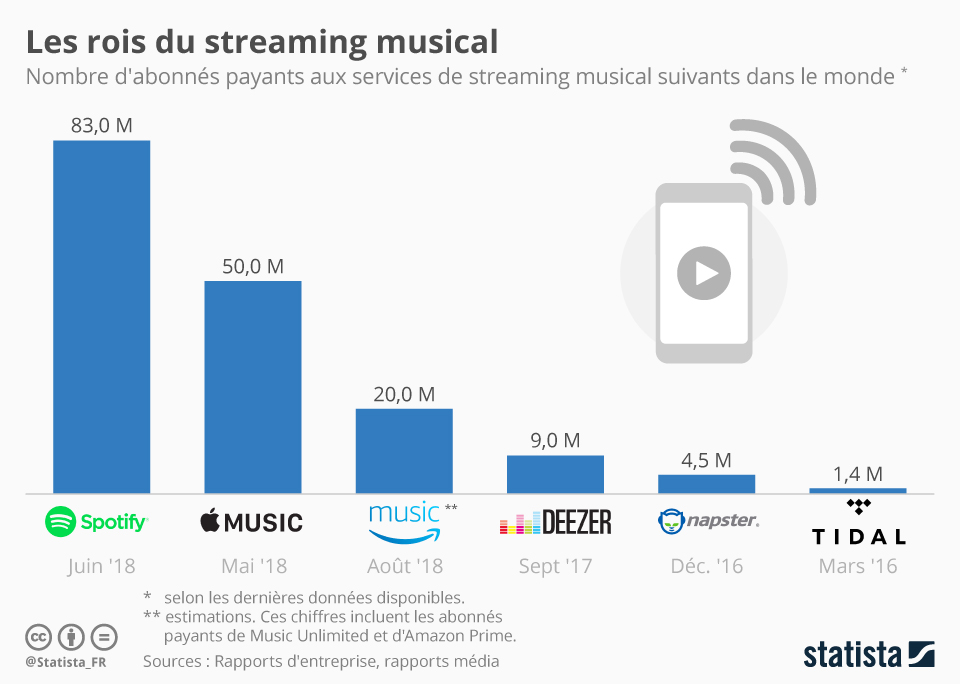

Le cas du streaming

La musique dématérialisée n'a pas complètement remplacé les achats de CD et de vinyles mais nous sommes de plus en plus à nous mettre à l'écoute de musique en ligne. Il s'agit du streaming : on ne télécharge plus les morceaux un par un, on ouvre le "robinet à musique".
Plusieurs plateformes de streaming existent : les plus connues sont Spotify et Deezer. D'autres comme Apple Music ou Google Play Music sont proposées d'office dans les smartphones Apple ou Android. Certaines plateformes telles que Tidal et Qobuz, moins connues, offrent une meilleure qualité sonore. YouTube s'y est également mis, avec YouTube Music.
Quelques chiffres clé :
81% des consommateurs utilisent un service de streaming plutôt qu'un support matériel, en France
97% des 16-24 ans écoutent de la musique sur un smartphone
1/3 des 16-24 ans écoutent de la musique avant d'aller dormir
72%des 16-24 ans s'accompagnent de musique sur le chemin des études ou du travail